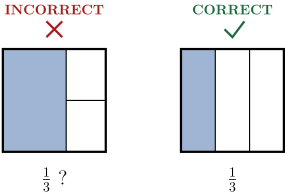
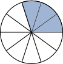
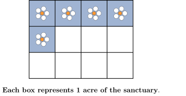

Introduction to Fractions
A fraction is an equal part of a whole. The square below has been divided into 4
equal parts. The fraction that represents the shaded part of the square is \(\textstyle \frac {1}{4},\) since 1 of
the 4 parts is shaded.
Show Alt Text
A square divided into four equal quadrants by a horizontal and a vertical line
through its center. The top-left quadrant is shaded blue, representing the fraction
one-fourth.
The denominator of a fraction tells you how many equal-sized pieces a whole has
been divided into. The numerator of a fraction is how many of those pieces you are
counting or considering.
Why do we need to divide a whole into equal parts?
Because fractions only make sense if the whole is divided into equal parts. For
example, the INCORRECT square on the left has been divided into 3 parts and 1 of
them is shaded. However, we can’t say that \(\textstyle \frac {1}{3}\) of the square is shaded because the
parts are not the same size. To correct this, we redraw the lines so that
every part is the exact same size, as shown in the CORRECT square on the
right.

Show Alt Text
Two squares side-by-side demonstrating the importance of equal parts in fractions.
The left square is labeled INCORRECT with a red X; it is divided into three unequal
parts with one large section shaded, showing that counting unequal pieces as
one-third is incorrect. The right square is labeled CORRECT with a green
checkmark; it is divided into three identical vertical rectangles with one shaded,
correctly representing the fraction one-third.
The circle below has been divided into 10 equal parts.

Show Alt Text
A circle representing a whole, divided into 10 equal
pie-shaped wedges. Three adjacent wedges in the top-right section are shaded blue.
What fraction of the circle is shaded?
\[ \textrm {Fraction Shaded } = \frac {\answer {3}}{\answer {10}} \]
A local wildlife sanctuary covers 12 acres of protected land. Recent data shows that
5 acres have been successfully restored with native wild flowers to support declining
bee populations.

Show Alt Text
A grid of 12 equal squares arranged in three rows of four. The four squares in the
top row and the first square in the middle row are shaded blue with white flowers in
the center.
The denominator is the number of parts the sanctuary has been divided into.
What fraction of the sanctuary’s total area has been restored with wild
flowers?
\[ \frac {\answer {5}}{\answer {12}} \]
What fraction of the sanctuary’s total area has not been restored with wild
flowers?
\[ \frac {\answer {7}}{\answer {12}} \]
Equivalent Fractions
The square on the left has been divided into 4 equal parts, with 2 parts shaded. The
square on the right has been divided into 2 equal parts, with 1 part shaded. Since
both squares are the same size and have an equal amount of shading, we can
conclude that \(\textstyle \frac {2}{4}\) is equivalent to \(\textstyle \frac {1}{2}.\)
![[Picture]](FractionsIntro.online-2b6f0ee00b96979c1ed5b691ead1e6ec.svg)
Show Alt Text
Two squares side-by-side, as described above, separated by an equal sign. The square
on the left represents two-fourths and the square on the right represents one-half.
Equivalent fractions represent the same part of a whole, but have different
numerators and denominators. Since a whole can be divided into any number of
equal parts, each fraction has infinitely many equivalent fractions.
Consider the circle below.
![[Picture]](FractionsIntro.online-aeaea48ff1a46ddcc007da16cc902a6b.svg)
Show Alt Text
A circle divided into six equal wedge-shaped sections.
Two adjacent sections on the upper-left are shaded blue.
What fraction of the circle is shaded?
\[ \textrm {Fraction Shaded } = \frac {\answer {2}}{\answer {6}} \]
Which of the following circles represents an equivalent fraction?
(a) (b) (c)
![[Picture]](FractionsIntro.online-f14592ef5779fc13c05c1132b0dc4de2.svg)
Show Alt Text
Three circles labeled (a), (b), and (c) representing fractions. Circle (a) is divided
into 2 equal parts with 1 shaded (one-half). Circle (b) is divided into 3 equal parts
with 1 shaded (one-third). Circle (c) is divided into 6 equal parts with 1 shaded
(one-sixth).
Types of Fractions
-
Proper fractions are fractions in which the numerator is smaller than
the denominator. A proper fraction is always less than 1.
- Example: \(\frac {3}{4}\)
-
Improper fractions are fractions in which the numerator is greater than or
equal to the denominator. An improper fraction is always greater than or equal
to 1.
- Example: \(\frac {7}{12}\)
-
Mixed numbers consist of a whole number and a fraction. A mixed number is
always greater than 1.
- Example: \(1 \frac {1}{4}\)
Classify each of the following fractions as a
proper fraction, an
improper
fraction or a
mixed number.
-
\(\displaystyle 2\frac {1}{2}\)
Proper Fraction Improper Fraction Mixed Number
-
\(\displaystyle \frac {11}{12}\)
Proper Fraction Improper Fraction Mixed Number
-
\(\displaystyle \frac {15}{8}\)
Proper Fraction Improper Fraction Mixed Number
-
\(\displaystyle \frac {5}{5}\)
Proper Fraction Improper Fraction Mixed Number
When we write the mixed number
\(\textstyle 1 \frac {1}{4}\) what arithmetic symbol is not written, but
understood to be between the 1 and
\(\textstyle \frac {1}{4}?\)
\(\mathbf {\times }\) \(\mathbf {-}\) \(\mathbf {+}\) \(\mathbf {\div }\)
That’s right! \(1 \frac {1}{4} = 1 + \frac {1}{4}\)
Negative Fractions
In the following problems, notice that the position of the negative sign changes but
the value of the fraction remains the same.
\begin{align*} \frac {-4}{2} &= -2 \\[3ex] \frac {4}{-2} &= -2 \\[3ex] -\frac {4}{2} &= -2 \end{align*}
Therefore, a negative sign in a fraction can be written in the numerator, the
denominator or in front of the fraction. However, when simplifying we typically place
the negative sign in front of the fraction.